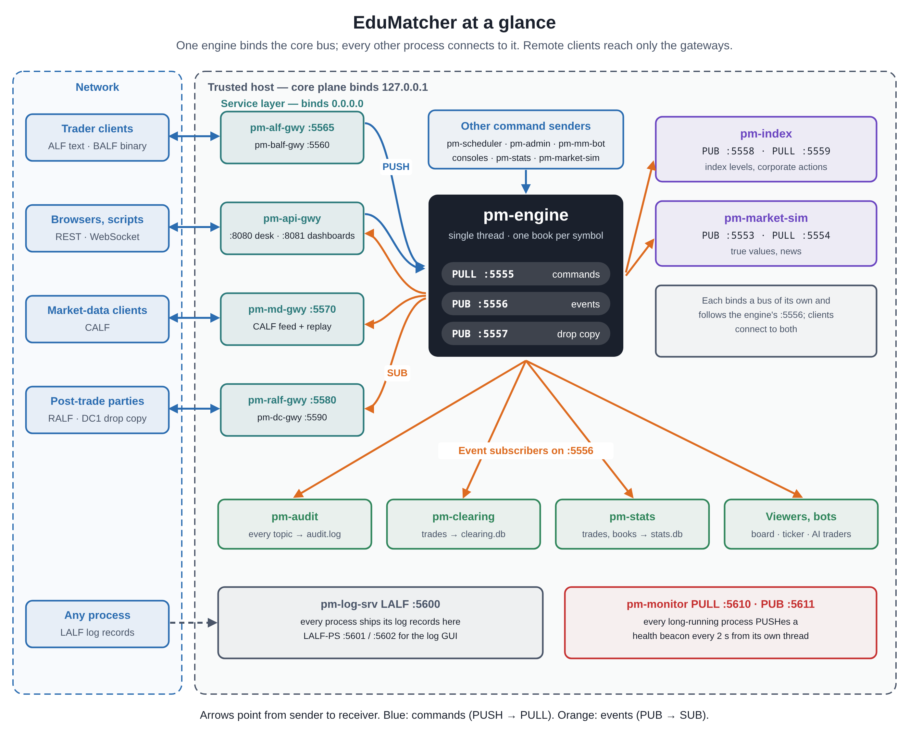
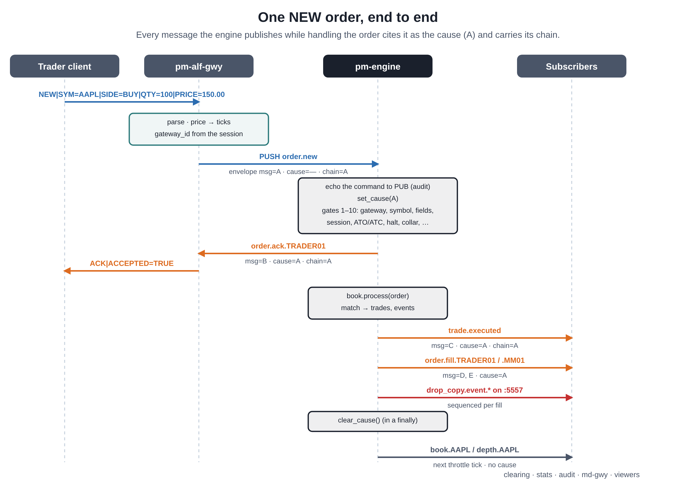
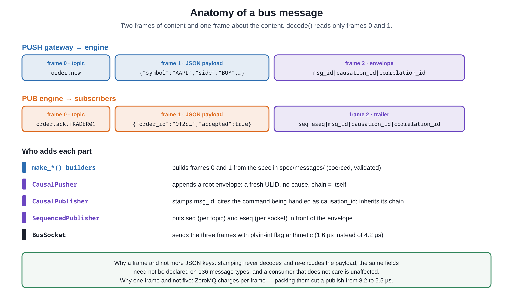
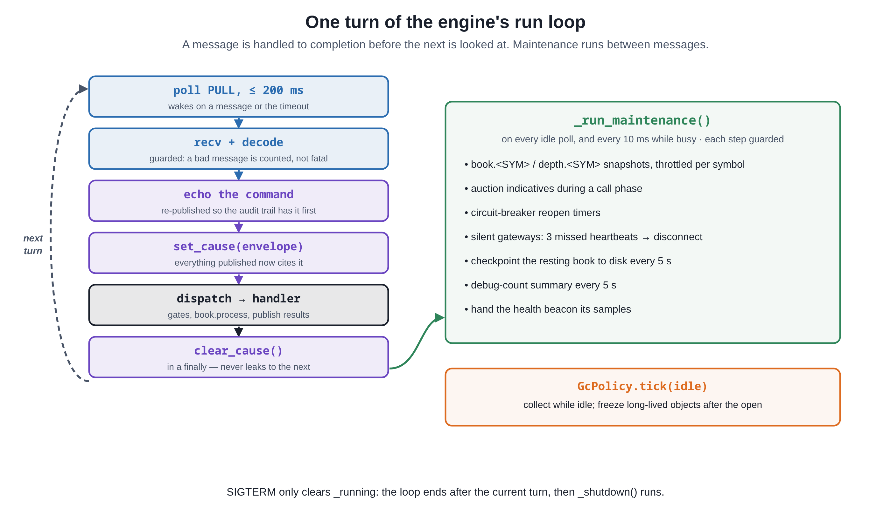
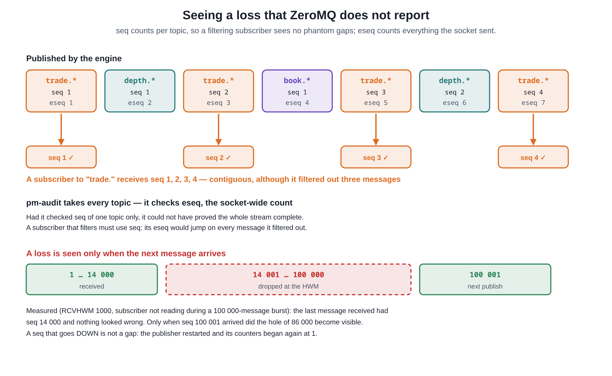
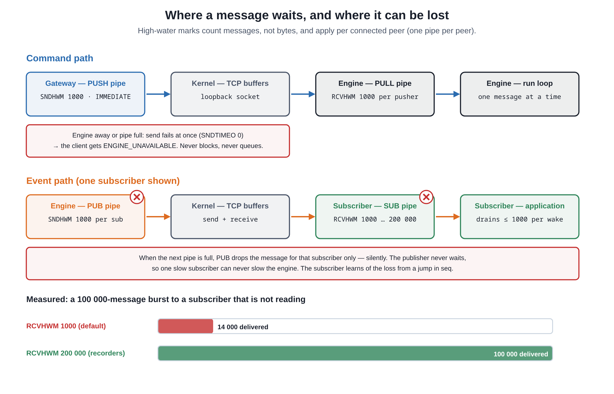
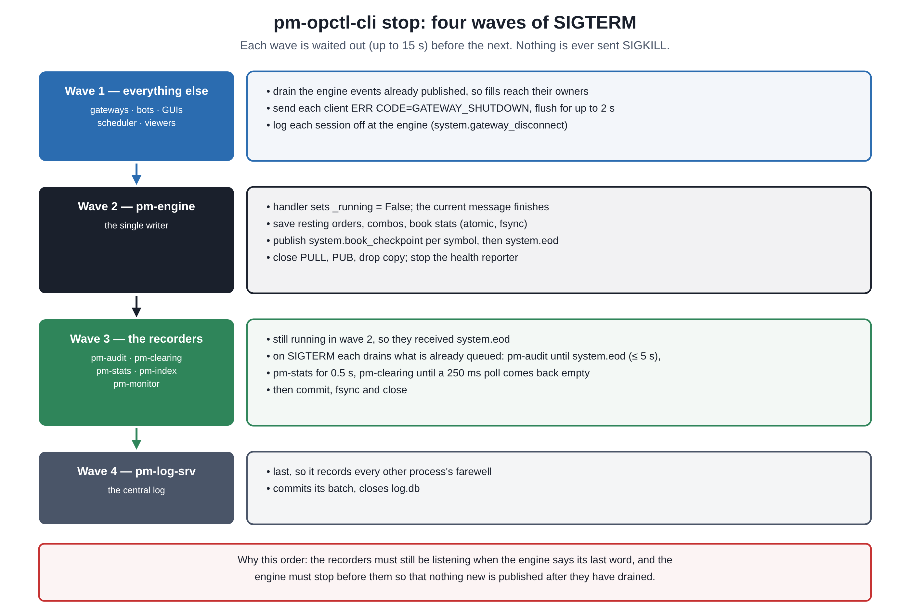

The Message Architecture¶
Learning objectives
After reading this chapter you will be able to:
- State the design decisions behind EduMatcher's process and message architecture, why each was taken, what it costs, and what the alternative would have been
- Trace every data flow in the exchange: commands, private replies, public market data, post-trade, the index and market-model buses, session control, health and logs
- Read a bus message frame by frame and say who wrote each part, and why metadata rides in a frame of its own
- Explain how ZeroMQ is made fast here, with the measured cost of each technique
- Explain every buffer: where a message can wait, how large each queue is, why it has that size, and where a message can be lost
- Explain what happens on SIGTERM: the order in which processes stop, what each one flushes, and the limits of that guarantee
- Explain how the system detects and survives slow consumers, lost messages, crashes, restarts and bad input
How this chapter relates to the others
Architecture is the reference: topic tables, process roles, ports, persistence files. The Guided Tour builds the system up from one limit order. This chapter is the why of the messaging layer, and the one to read before you change a socket option, a topic, a message or a shutdown path. Numbers marked measured were taken on the development machine (CPython 3.14.10, pyzmq 27.3, libzmq 4.3.5, x86-64 Linux) with the scripts this chapter describes; absolute values depend on the host.
The ideas the design rests on¶
Eight ideas explain almost everything in the messaging layer. The rest of the chapter is their consequences.
- One writer. Exactly one process,
pm-engine, changes the state of the market, and it does so on one thread, one message at a time. Everything else asks it to act (commands) or watches what it did (events). - Processes talk only through messages. No process reads another's memory or files while it runs. A new consumer is a new subscriber, and the engine does not change.
- The engine never waits for anyone. Commands that cannot be delivered fail at the sender; events a slow consumer cannot take are dropped for that consumer only. One misbehaving process can never stall the market.
- Loss is detected, not prevented, on the internal bus. Every published message carries sequence numbers, so a consumer can prove what it missed. Replay exists where an outside party needs it: at the external gateways.
- Every message says why it exists. A causal envelope links each effect to the command that caused it, so "what did this order cause?" is a lookup, not a reconstruction.
- Messages are specified once. YAML files under
spec/messages/define every topic and field (136 messages in 17 families); Python bindings, C headers and the message reference are generated from them and checked in CI. - Prices are integers inside. The engine works in integer ticks and nanoseconds; display prices appear only at the edges, next to the tick scale needed to read them.
- Trust stops at the gateways. The internal bus is unauthenticated and binds loopback; remote parties reach the exchange only through gateways that authenticate and validate.
The exchange at a glance¶

There are five buses. Each is owned — bound — by exactly one process, and every other process connects to it:
| Bus | Owner | Sockets | Carries |
|---|---|---|---|
| Engine bus | pm-engine |
PULL :5555, PUB :5556 | commands in; every event out |
| Drop copy | pm-engine |
PUB :5557 | one sequenced record per fill, for compliance consumers |
| Index bus | pm-index |
PUB :5558, PULL :5559 | index levels; corporate-action and constituent commands |
| Market-model bus | pm-market-sim |
PUB :5553, PULL :5554 | true values and news for the AI traders; sim.command |
| Health bus | pm-monitor |
PULL :5610, PUB :5611 | a beacon from every long-running process; health snapshots and events |
Two more listeners complete the picture. pm-log-srv takes log records from
every process over the LALF protocol on :5600 and republishes them on
LALF-PS :5601/:5602. The recorders and pm-index each bind a REP socket on
loopback (:5561 stats, :5562 audit, :5563 clearing, :5564 index) that answers
one question: is your receive loop alive? Their *-cli health commands use it.
The service layer — pm-alf-gwy (5565), pm-balf-gwy (5560), pm-api-gwy
(8080 desk, 8081 dashboards), pm-md-gwy (5570), pm-ralf-gwy (5580),
pm-dc-gwy (5590) — speaks TCP protocols to the outside world and ZeroMQ to
the engine. A remote client never touches a ZeroMQ socket.
The design decisions¶
Each decision below gives the choice, the reason, what was rejected, and what the choice costs. The costs are real; knowing them is what stops a later change from undoing the decision by accident.
Separate processes on a message bus¶
Choice. Every function — matching, each gateway, clearing, statistics, audit, index calculation, monitoring — is its own OS process.
Why. Isolation and extensibility. A crash in clearing cannot corrupt the order book; a new consumer is a new process that subscribes. It also mirrors how real venues are built: a matching core publishing to downstream systems.
Rejected. A monolith (simple, but every feature touches the matcher) and threads around a shared, locked book (fast, but races and lock contention are the hardest bugs there are, and the GIL removes most of the speed).
Cost. Every interaction is a serialised message, and the system has many
processes to start, stop and watch — which is what pm-opctl-cli, the health
bus and the central log server exist for.
ZeroMQ, and no broker¶
Choice. ZeroMQ sockets connect the processes directly. There is no message broker.
Why. Microsecond latency, no extra process to operate or to fail, and the patterns needed — PUSH/PULL pipelines and PUB/SUB fan-out with prefix filtering — are built in. The same code works over loopback or a network by changing an address.
Rejected. A broker (Kafka, RabbitMQ) would give durability and replay for free, at the price of a second critical process, milliseconds of latency, and an operational burden out of proportion to a teaching exchange.
Cost. No durability and no delivery guarantee on PUB/SUB. The system compensates with sequence numbers (Seeing what was lost), recorders that persist what they receive, and replay at the external edges.
The engine is the sole binder of its bus¶
Choice. pm-engine binds :5555/:5556/:5557; every other process connects.
pm-index, pm-market-sim, pm-monitor and pm-log-srv bind buses of their
own, because they publish or collect something the engine does not.
Why. One well-known address per bus, and processes may start and restart in any order: a ZeroMQ connect succeeds before the peer binds and reconnects automatically after the peer restarts.
Cost. The engine is a single point of failure by design. There is exactly one book; a second engine would be a second, divergent market.
One thread, one message at a time¶
Choice. The engine handles each command to completion — validation, acknowledgement, matching, every resulting publish — before it reads the next.
Why. Correctness without locks, and determinism: the order messages come
off the PULL socket is the arrival order, and the book stamps each resting
order with its own arrival_seq, so price-time priority cannot be forged by a
client timestamp. A combo cascade or an OCO cancel is atomic because nothing
else runs in between.
Cost. One core's worth of throughput, and anything slow between two messages — a long auction uncross, a garbage collection — delays every message queued behind it. The Performance Engineering chapter is mostly about keeping that "between" short.
Commands by PUSH/PULL, events by PUB/SUB, no request/reply sockets¶
Choice. Every request to the engine, including read queries, is a PUSH.
Every answer is a PUB, on a topic that names the asking gateway
(order.ack.TRADER01, system.symbols.TRADER01). REP sockets exist only for
the liveness pings of The exchange at a glance.
Why. PUSH/PULL fair-queues many senders into one reader, which is exactly "many gateways, one engine". Answering on PUB means the engine never holds a per-client socket or waits for a reply to be read; ZeroMQ's subscription filter does the routing. A REQ/REP socket would block the engine on a slow client and enforce a strict request-reply lock-step that does not fit asynchronous fills.
Cost. A gateway must subscribe to its own reply topics before it sends, and replies to different gateways share one socket — which is why the subscription prefix must be unique per gateway id.
Topics are dotted names with the routing key last¶
Choice. A topic is family.event, optionally followed by one parameter:
trade.executed, book.AAPL, order.fill.TRADER01, index.update.
Why. ZeroMQ filters by byte prefix, so the most general part must come
first. order.fill. subscribes to every fill; order.fill.TRADER01 to one
gateway's. The generated PREFIX_*, topic_*() and match_*() helpers build
and parse these strings, so no process types a topic literal
(pm-msgen grep-literals lists any that remain).
Cost. A prefix match cannot express "every symbol's book except one" or
"fills for two gateways" except by subscribing twice. A parameter must not
contain a dot.
Messages are specified, then generated¶
Choice. spec/messages/*.yaml is the single source of truth: topic,
fields, types, units, which fields are optional, validation rules, and the
external projections (CALF, RALF, BALF) of each event. pm-msgen generate
writes the Python bindings under models/generated/, the C headers for the
example clients, and the
message reference.
pm-msgen check fails CI when committed output and spec disagree.
Why. Producer, consumer and documentation can no longer drift apart, and every message is validated at the boundary where it enters the system. See Message Generation.
Cost. One more step after editing a message (make msgen). Each binding
has a validating builder for the edges and a byte-identical _unchecked twin
for the engine's measured hot paths, and a test pins that they agree.
JSON payloads inside, binary only at one edge¶
Choice. The internal bus carries JSON (encoded with orjson). The binary
BALF protocol exists only between clients and pm-balf-gwy.
Why. Every payload is readable in the audit log, in a debugger and with
pm-audit-cli. orjson encodes a small payload in a fraction of a
microsecond, so the readability costs little next to the rest of the path.
Cost. Field names are repeated in every message, and a consumer parses text. Neither has shown up as a bottleneck in a profile.
Metadata in a trailing frame¶
Choice. Sequence numbers and the causal envelope ride in one ASCII frame behind the payload, not in the JSON. See The design of a message.
Why. Stamping a message never decodes and re-encodes it; the same fields
need not be declared on 136 message types; and decode() reads only the
first two frames, so no consumer had to change when the frame was added.
Detect loss on the internal bus; replay at the edges¶
Choice. The engine's PUB socket drops a message for a subscriber whose
queue is full, and the subscriber detects the hole from the sequence numbers.
There is no replay on the internal bus. The external feeds — CALF, RALF, DC1
drop copy, the WebSocket trade stream — keep replay buffers and support
RESUME.
Why. Blocking the publisher would let one stuck subscriber halt the market (idea 3). Internal subscribers are co-located processes with deep queues (Buffer sizes, and why they are what they are), so drops are rare and signal a fault to fix. External parties are on networks the exchange does not control, so they get the replay.
Cost. An internal consumer that misses messages cannot ask for them
again; it can report the gap (pm-stats writes feed_gaps, the gateways count
*.bus_gaps) and an operator can rebuild from the audit trail
(pm-clearing-cli rebuild replays it).
The command is recorded before it is handled¶
Choice. The engine re-publishes every command it receives (but not read
queries) onto its PUB socket before dispatching it, keeping the sender's
msg_id.
Why. The audit trail then holds the request before its own ACK, survives
a crash in the middle of handling it, and every effect's causation_id names
a message that is actually in the trail.
Cost. About 2 µs per command. A query (*_request topics, heartbeats) is
not echoed, so its reply starts a chain of its own rather than citing a
message nobody recorded.
Senders fail fast; publishers never wait¶
Choice. Every PUSH socket is made with SNDTIMEO=0, IMMEDIATE=1 and
SNDHWM=1000. A send that cannot be queued at once raises zmq.Again, and
the gateway answers its client ENGINE_UNAVAILABLE. PUB sockets never block
by ZeroMQ's design.
Why. Every process with a PUSH socket is a single-threaded reactor. A blocking send would freeze a gateway — every client session with it — while the engine is restarting. A fast, explicit refusal is honest; a silent queue that delivers stale orders minutes later is not.
Cost. During an engine restart, clients see refusals and must retry.
Market data is throttled; trades are not¶
Choice. trade.executed, fills and acknowledgements are published at
once. Full book images (book.<SYM>, depth.<SYM>) are published at most once
per snapshot_interval_sec (default 0.5 s) per symbol, on the maintenance
tick.
Why. A snapshot costs O(book) to build and is the largest message on the bus; at a thousand trades a second nobody needs a thousand books. Throttling turns a per-trade cost into a per-interval one and is the single largest lever on bus volume.
Durability by checkpoint and recorders, not a write-ahead log¶
Choice. The engine checkpoints its resting book to JSON every 5 s and at shutdown (atomic write, fsync before rename). Trades are made durable by the recorders — clearing, stats, audit — which write them as they arrive.
Why. A write-ahead log would put a disk write on every command's path. A five-second checkpoint bounds what a crash can lose while costing nothing per order.
Cost. A SIGKILL or power loss loses up to five seconds of book changes
and whatever was in flight on the bus. See Resilience: how failures are detected and survived.
A separate socket for drop copy¶
Choice. Fill records for compliance consumers go out on their own PUB
socket (:5557) with a session-wide sequence and a 10 000-message in-memory
replay ring, relayed outward by pm-dc-gwy.
Why. A compliance consumer must see every fill and nothing else, and must be able to prove completeness. A dedicated socket keeps the volume low and the sequence meaningful. If :5557 is taken, the engine logs a warning and runs without drop copy: a port conflict must not stop matching.
Two network planes¶
Choice. The core plane (pm-engine, pm-index) binds 127.0.0.1 by
default; the service layer binds 0.0.0.0. See
Deployment Topology & Trust Boundaries.
Why. The internal bus has no authentication; anything that can reach :5555 can submit as any gateway. Keeping it on loopback means only processes on the host can. Being reachable is the gateways' purpose, and they authenticate.
Health and logs on buses of their own¶
Choice. Every long-running process runs a HealthReporter thread that
PUSHes a beacon to pm-monitor every 2 s, and ships its log records to
pm-log-srv.
Why. The beacon comes from a separate thread, so a hung main loop still reports — with a growing "loop age" that says exactly that. Both use non-blocking sends, so a missing monitor or log server costs nothing. Operational traffic never shares a queue with market events.
How data flows through the exchange¶

Order entry. A client sends an ALF line, a BALF frame or a REST request
to its gateway. The gateway authenticates the session, parses and validates
the request, converts prices to ticks, sets gateway_id from the session
(never from the request), and PUSHes order.new with a root envelope. The
engine echoes the command, runs its checks, publishes the ACK, matches, and
publishes the fills and trades — all inside one dispatch. The figure shows the
causal ids: everything published while handling the order cites it.
Private replies. ACKs, fills, cancels and query answers go out on the PUB socket under topics ending in the gateway id. Each gateway subscribes to its own ids' prefixes when a session logs on, so the reply reaches exactly one process, which relays it to the right client connection.
Public market data. trade.executed goes out at once. Book images and
depth statistics follow on the next throttled maintenance tick;
auction.indicative.<SYM> is published during call phases; session changes
(session.state), halts and resumes (circuit_breaker.*) are broadcast when
they happen. pm-md-gwy turns these into the CALF feed for external clients
and keeps the replay window; the viewers, board and ticker read them directly.
Post-trade. Each trade reaches pm-clearing (positions and P&L into
clearing.db), pm-stats (OHLCV and the trade log into stats.db) and
pm-audit (everything, into the audit trail) from :5556. pm-ralf-gwy
serves trade reports to external post-trade parties from the same stream.
The drop-copy records on :5557 go to pm-dc-gwy and the consoles that
subscribe to them.
The index bus. pm-index follows trades and book snapshots on :5556,
recomputes each index, and publishes index.update on its own :5558. It
takes corporate actions and constituent changes as commands on :5559 and
answers on its PUB socket, exactly as the engine does on its bus.
The market-model bus. pm-market-sim follows the session on :5556 and
publishes each symbol's true value and the news on :5553, which the AI
traders, pm-mm-bot --anchor-sim and the ticker read. Operators command it on
:5554.
Session control. pm-scheduler decides when phases change, using
locale.session_timezone, and PUSHes session.transition; the engine decides
what a phase change does (uncross, expire ATO/ATC or DAY orders, broadcast
session.state). The engine itself never reads the clock to change phase.
Health and logs. Beacons go to pm-monitor, which judges each process,
keeps metrics.db and publishes health.snapshot/health.event for the
operator dashboard. Log records go to pm-log-srv.
Out to the world. The four external feeds — CALF market data, RALF post-trade, DC1 drop copy and the WebSocket streams — are projections of bus events. Their field lists are declared in the same message specs, so the gateways do not invent wire formats of their own.
The design of a message¶

Frames 0 and 1 are the message. Frame 0 is the topic, used by
subscription filters; frame 1 is the JSON payload. encode() writes exactly
these two, and decode() reads exactly these two.
Frame 2 is about the message. Its fields are ASCII, separated by |, an
empty field meaning absent:
msg_id— a ULID: unique, and sortable by the time it was minted, so sorting bymsg_idgives the order the engine acted in across all topics.causation_id— themsg_idof the command whose handling produced this message, or empty when nothing on the bus caused it (a timer, a circuit-breaker reopen, a startup recovery). Empty is a positive statement, not missing data.correlation_id— the chain: the root command's id, inherited unchanged by every descendant.- On PUB only, in front of these:
seq, counted per topic, andeseq, counted per socket (Seeing what was lost).
Who writes it. CausalPusher wraps every PUSH socket and stamps a root
envelope. CausalPublisher wraps the engine's PUB socket; the run loop calls
set_cause() with the inbound envelope before dispatching and clear_cause()
in a finally after, so attribution can never leak to the next message.
SequencedPublisher puts the two counters in front. Wrapping the socket,
rather than editing the hundred-odd publish sites, is the point: an envelope
attached only where someone remembered would be worse than none.
Payload conventions.
- Prices travel twice where it matters: as a display number (
price) and as integer ticks (price_ticks) with thetick_decimalsneeded to read them. Consumers that compute use the ticks. - Timestamps are integer nanoseconds (
ts_ns). - Identifiers are strings. A trade id is
{run_seq:06d}-{n:09d}: the engine-run sequence is persisted and bumped at every start, so trade ids stay unique across restarts. - Enumerations are their names (
"BUY","CANCEL_AGGRESSOR"). - A rejected request answers with a stable
codefrom the reject-code catalogue and a humanreason.
Versioning. Each family has a version in its spec, exported as
FAMILY_VERSION. A change that is not backward-compatible — a field
removed, renamed or retyped — bumps it. Every process on one bus must run the
same build: the trailing frame changed shape in the 2026-11 messaging review,
and there is no negotiation.
Making ZeroMQ fast¶
The engine publishes several messages per order, so the cost of one publish is multiplied many times. These are the techniques in use, with what each one buys.
| Technique | Where | Effect |
|---|---|---|
One shared Context per process |
messaging/bus.py::get_context |
One I/O thread; no per-socket setup cost |
BusSocket.send_multipart with plain-int flags |
messaging/bus.py |
Measured: a 3-frame send costs 1.6 µs instead of 4.2 µs. pyzmq's own loop ORs zmq.SNDMORE, an IntFlag, per frame, and on Python 3.14 that costs more than the send |
| One trailing frame, not five | SequencedPublisher |
ZeroMQ charges per frame; packing cut a stamped publish from 8.2 to 5.5 µs (messaging review). Measured now: 4.0 µs, of which minting the ULID is 1.0 µs |
| Pre-encoded topics | Engine._topic_cache, generated _TOPIC constants |
No f-string and .encode() per message |
orjson, and builders that make the dict once |
models/message.py, make_*_unchecked |
Encoding is a fraction of a microsecond |
| Publisher-side filtering | libzmq (TCP) | A subscriber's prefixes are sent to the publisher, which never transmits a message nobody on that connection wants. A consumer of trade. costs nothing for the book. traffic it ignores |
| Throttled snapshots | _flush_snapshots |
The largest messages are sent at most twice a second per symbol |
| Drain in batches | pm-stats, pm-index (_DRAIN_PER_WAKE = 1000), gateways |
One poll wakes the loop, then up to 1000 queued messages are handled with poll(0) before other sockets get a turn |
| Edge-triggered fds in the asyncio gateways | alf_gwy, balf_gwy |
The ZMQ notification fd joins epoll; the loop drains and re-checks zmq.EVENTS before waiting, so a capped drain never strands a message |
| Maintenance between messages, not per message | Engine.run |
Snapshots, timers and checkpoints run on every idle poll and every 10 ms while busy |
| Sampled timing | SAMPLE_EVERY = 16 |
Latency is measured on 1 message in 16 |

Two rules keep these techniques honest. A change to the hot path needs a
profile showing its target is at least 1 % of wall time. And where a shortcut
skips validation (the _unchecked builders), a test pins that it produces
the same bytes as the checked path.
To repeat the publish measurement, time send_multipart on a raw pyzmq PUB
socket, on a BusSocket, and on make_publisher(), in a loop of 200 000 with
the garbage collector disabled; take the best of five runs.
Seeing what was lost¶

ZeroMQ PUB/SUB drops silently: nothing in a delivered message, and no error anywhere, says that an earlier one was discarded. The sequence numbers are the only evidence, and there are two because subscribers differ:
seqcounts per topic. A subscriber that filters (most of them) sees a contiguous sequence on each topic it takes, whatever it filters out. Read it withdecode_sequence(frames).eseqcounts everything the socket published. A subscriber that takes every topic — pm-audit — can prove the whole stream complete. Read it withdecode_publisher_sequence(frames).
Three properties matter in practice:
- A loss is visible only when the next message on that topic arrives.
Measured: a subscriber with the default receive HWM, not reading during a
100 000-message burst, received seq 1 to 14 000 and saw nothing wrong. The
hole of 86 000 appeared when seq 100 001 arrived. A quiet topic can hide a
loss for a long time, which is one reason pm-audit checks
eseq: on a busy bus, the next message on some topic comes quickly. - A sequence that goes down is a restart, not a gap. Counters live in the
publisher's memory and start at 1 again when it restarts. The engine also
publishes
system.startup_recoveryat every start; the gateways treat it as "every engine-side session is gone" and close their client sessions so the clients log on again. - Detection is per consumer. Each process counts its own losses: pm-stats
records them in
feed_gaps,pm-md-gwyand the other gateways report*.bus_gapscounters in their health beacons, and pm-audit counts missedeseqvalues. A loss on the internal bus means a consumer fell behind its high-water mark — a capacity problem to fix, not a normal event.
Buffer sizes, and why they are what they are¶

How ZeroMQ buffers¶
A ZeroMQ socket keeps one queue (a "pipe") per connected peer, and its high-water mark (HWM) limits each pipe in messages, not bytes. The default is 1000 in each direction. Behind the pipes sit the kernel's TCP send and receive buffers, a few megabytes on loopback. What happens at a full pipe depends on the socket type:
- PUSH blocks the sender, or — with
SNDTIMEO=0as here — fails at once. - PUB drops the message for that one subscriber and carries on.
- SUB stops reading its connection; the publisher's pipe for it fills and the publisher drops.
So the queue that decides whether a subscriber loses messages is the sum of its own receive pipe, the kernel buffers and the publisher's send pipe for it. The measured 14 000 of Seeing what was lost is roughly 1000 + 1000 plus what the kernel held.
Every buffer in the system¶
| Socket | Option | Value | Why this value |
|---|---|---|---|
Every PUSH to the engine (make_pusher) |
SNDHWM / SNDTIMEO / IMMEDIATE |
1000 / 0 / 1 | Fail fast: never block a reactor; queue only to a connected engine, so nothing is held for a peer that is not there |
pm-scheduler PUSH |
SNDTIMEO / LINGER |
2000 ms / 1000 ms | A phase change is rare and important: wait up to 2 s for the engine rather than drop it, but never hang at exit |
| Engine PULL :5555 | RCVHWM |
1000 per sender (default) | Fair-queued per gateway; a burst from one gateway cannot crowd out another's queue |
| Engine PUB :5556 | SNDHWM |
1000 per subscriber (default) | The publisher never waits; the depth that protects a subscriber is its own RCVHWM |
pm-audit, pm-alf-gwy, pm-balf-gwy, pm-alf-console, AI-trader worker SUB |
RCVHWM |
200 000 | They must see every message they take (audit, everything; gateways, fills for their clients). Deep enough to ride out an open or a burst, bounded so a stuck process cannot grow without limit |
| pm-clearing, pm-stats, pm-md-gwy, pm-ralf-gwy, pm-dc-gwy SUB | RCVHWM |
100 000 | Same reason; they take fewer topics, so the same depth covers a longer burst |
pm-monitor's engine SUB |
RCVHWM |
10 000 | It only counts and samples events; a lost one costs a figure, not a record |
Health beacon PUSH (HealthReporter) |
SNDHWM / LINGER |
10 / 0, last beacon 500 ms | A beacon is stale in seconds; never queue more than a few, never delay exit — except the final beacon, which says "stopping on purpose" |
pm-log-srv PUB (LALF-PS) |
SNDHWM |
max_pending_rows / backfill_chunk_rows, capped by log_server.pub_sndhwm (10 000) |
Sized so ZeroMQ holds about max_pending_rows rows per peer, whatever the chunk size |
| Engine drop-copy ring | in memory | 10 000 records | The replay reach for drop-copy gap recovery |
| Gateway client queues (TCP side) | max_client_queue |
10 000 lines | A client that stops reading is cut off with SLOW_CLIENT rather than allowed to hold memory |
Why the HWM is set before connect(). ZeroMQ applies an HWM only to
connections made after it is set, which is why make_subscriber(…, rcvhwm=…)
sets it first. Setting it afterwards silently changes nothing.
What a deep queue costs. Memory, only when used: a full queue of 200 000
messages of 500 bytes holds about 100 MB, and a queue that deep at 10 000
messages a second is 20 seconds behind. A deep queue buys time to catch up
from a burst; it does not fix a consumer that is too slow on average, which
is why pm-monitor watches each process's loop age and queue growth.
What was deliberately not used. ZMQ_CONFLATE (keep only the newest
message) would suit a viewer that only needs the latest book, but it cannot
be combined with multipart messages, and every message here has three frames.
Stopping cleanly: what happens on SIGTERM¶

Signal handlers only set a flag¶
Every long-running process installs SIGTERM and SIGINT handlers that do one
thing: clear a _running flag (or set a stop event). The work happens when
the main loop next checks the flag, never inside the handler. A handler that
closed sockets itself could interrupt the middle of a message — inside
_handle_new_order, say — and leave the process publishing on a closed socket.
The interactive consoles route SIGTERM and SIGHUP the same way, so closing the
terminal logs the participant off instead of leaving their orders resting
until the heartbeats run out.
The engine's shutdown sequence¶
When the loop sees the flag, the message being handled finishes, and
Engine._shutdown() runs four guarded steps — a failure in one (a full disk,
say) does not skip the others:
- Save every resting order (
TIF=GTCandTIF=DAY— a restart is not a day boundary) togtc_orders.json. - Save live combos to
gtc_combos.json. - Save book statistics — last prices, circuit-breaker reference windows,
operator halts — to
book_stats.json. - Publish
system.book_checkpoint.<SYM>for every book, thensystem.eod, the engine's last message.
Each file is written by atomic_write_text: write to a temporary file, fsync,
rename over the old one. A crash during the write leaves the previous
checkpoint intact. Then the PULL, PUB and drop-copy sockets close and the
health reporter sends its final beacon.
The stop order¶
pm-opctl-cli stop signals in waves and waits for each wave to exit (up to
15 s, or with --timeout an even share of the time left, as the container's
entrypoint asks so the stop fits its grace period) before signalling the next:
- Everything else — gateways, bots, GUIs, scheduler, viewers. A gateway
first delivers the engine events already published, so fills reach their
owners; sends each client
ERR CODE=GATEWAY_SHUTDOWNand flushes for up to 2 s; and logs each session off at the engine. - pm-engine — the sequence above.
- The recorders — pm-audit, pm-clearing, pm-stats, pm-index, pm-monitor.
They were still running during wave 2, so they received the end-of-day
checkpoints and
system.eod. On their own SIGTERM each drains what is already queued before committing and closing: pm-audit reads until it has recordedsystem.eod(at most 5 s), pm-stats for 0.5 s, pm-clearing until a 250 ms poll comes back empty. pm-audit fsyncs its file at least once a second while running and again at close. - pm-log-srv — last, so it records everyone else's farewell.
No process is ever sent SIGKILL. In a container, the entrypoint traps SIGTERM
and runs pm-opctl-cli stop; the compose files give it 30 s (60 s for the
AI-trader simulation) before the container runtime kills what is left, which
is ample for a normal stop but less than four slow waves could take.
What ZeroMQ does with unsent messages at exit¶
ZeroMQ sends from a background I/O thread, so a send returns before the
bytes leave. Whether queued messages survive the process exiting depends on
where they are:
- Bytes already in the kernel's TCP buffer survive. The kernel keeps sending after the process is gone.
- Messages still in a libzmq pipe do not.
LINGERwould make ZeroMQ wait for them, but only when the context is terminated, and pyzmq does not terminate the shared context at exit. Measured: with a subscriber frozen during a 50 000-message burst, about 900 messages still in the publisher's pipe were lost when it exited, whateverLINGERwas set to; a publisher that stayed alive delivered them.
For the engine this means: a subscriber that is keeping up — every recorder
in a normal stop, since wave 3 is still running — has an empty pipe and
receives system.eod. A subscriber that has stalled behind its HWM misses the
end of the stream, including system.eod, exactly as it would miss any other
message. That is detectable (its sequence jumps on the next run's messages,
and pm-audit reports the missing eseq), but it is not prevented. Terminating
the context with a bounded linger after the final publish would close that
window; see Known limits.
What an abrupt stop loses¶
| Event | Lost | Kept |
|---|---|---|
SIGKILL, OOM, power loss of the engine |
Up to 5 s of book changes since the last checkpoint; messages in ZeroMQ queues | The last checkpoint; every trade the recorders had already written |
| A recorder killed | Messages in its receive queue; its uncommitted batch | Its database up to the last commit; the trades, which it can rebuild from the audit trail |
| A gateway killed | Lines queued to its clients | Nothing at the engine is lost; the engine notices the missing heartbeats and applies the session's disconnect behaviour |
Resilience: how failures are detected and survived¶
| Failure | How it is detected | What happens |
|---|---|---|
| A subscriber falls behind | A jump in seq/eseq; growing loop age and queue in its health beacon |
Messages past its HWM are dropped for it alone; the engine and other subscribers are unaffected. The gap is counted and logged |
| The engine is down or restarting | A PUSH send raises zmq.Again |
Gateways answer ENGINE_UNAVAILABLE at once; ZeroMQ reconnects when the engine is back |
| The engine restarted | system.startup_recovery; sequence numbers fall to 1 |
Gateways drop their engine-side sessions so clients log on again; the book comes back from the checkpoint with its original priority (arrival_seq order); trade ids continue under a new run sequence |
| A recorder restarted | Its own startup | pm-clearing warm-starts its ledger from clearing.db; trade rows are inserted with INSERT OR IGNORE on the trade id, so a duplicate delivery is harmless |
| A client vanished | No heartbeat for three of its own intervals (60 s, or 5 s for interactive consoles) | The engine disconnects the session and applies its disconnect_behaviour (CANCEL_QUOTES_ONLY by default) |
| A malformed message on :5555 | decode() raises inside the guarded receive |
The message is counted and discarded, a system.diagnostic is published, and the loop continues — one bad sender cannot end the session |
| A handler raises | The try around dispatch |
Where the request names a gateway to answer, it gets a reject with INTERNAL_ERROR, so it is never left waiting; the cause is cleared in the finally |
| A maintenance step raises | Each step guarded separately | The others still run: a failed snapshot cannot skip the circuit-breaker reopen timers |
| A checkpoint fails | The try in _flush_persistence |
The previous checkpoint stays on disk; the error is logged and counted; trading continues |
| The drop-copy port is taken | zmq.ZMQError at bind |
A warning; the engine runs without drop copy |
| An external client misses data | Its own sequence (CALF per channel and symbol, RALF and DC1 per session) | It sends RESUME with its last sequence and the feed's epoch; the gateway replays from its buffer, or says the range is gone |
| A process hangs | The beacon thread keeps reporting a growing loop age | pm-monitor marks it degraded and says why |
The pattern across the table is the same: fail at the edge of the fault. A slow consumer loses its own messages; a bad message loses itself; a failed flush loses its own work. Nothing propagates back into the engine's loop.
Known limits¶
These are deliberate limits of a teaching exchange, recorded so that nobody mistakes them for guarantees:
- No replay on the internal bus. A consumer that misses messages can detect and report the gap, and rebuild from the audit trail, but cannot ask the engine for them again.
- Unsent ZeroMQ messages are lost at exit. The engine closes its sockets but does not terminate the context with a linger, so anything still queued for a stalled subscriber dies with the process (Stopping cleanly: what happens on SIGTERM). Closing the PUB socket with a bounded linger and terminating the context would let up to that linger's worth be delivered, at the cost of a slower stop.
- One engine, no failover. A standby engine would need replicated state and sequenced command logs; see What Is Missing.
- The internal bus is unauthenticated and unencrypted. It is safe only on a trusted host. CurveZMQ or network ACLs would be needed before exposing it.
- Five seconds of exposure. A crash loses up to one checkpoint interval of book changes.